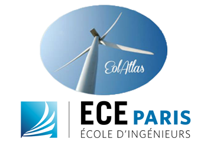

test
Courbe Weibull
Sélectionnez les couches à activer ou désactiver:

Cet atlas éolien, disponible en Open Source vise à favoriser le développement des énergies renouvelables sur le territoire de France métropolitaine. Cliquez sur n'importe quel point de la carte afin d'afficher le potentiel éolien disponible pour la station météorologique la plus proche de la zone sélectionnée.
Cet atlas éolien, disponible en Open Source vise à favoriser le développement des énergies renouvelables sur le territoire de France métropolitaine. Cliquez sur n'importe quel point de la carte afin d'afficher le potentiel éolien disponible pour la station météorologique la plus proche de la zone sélectionnée.